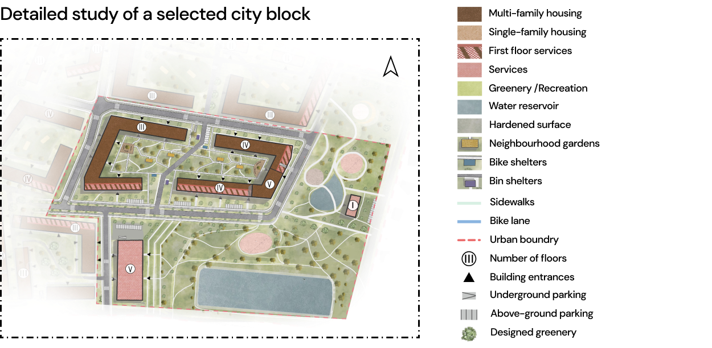

Sensory Osowa
The project presents results of work within the participatory planning process: Towards Compact City – Gdańsk-Osowa district case study. The aim of the process was to present the new, innovative design visions for the area located in Gdańsk-Osowa district in the context of land use plan. The participatory methodology was used the add extra value for the process. The city councillors, city urban planners and citizens took part are a review committee. The aim of the research was to test the ideas of “compact” and “walkable” cities in the context of a suburban neighborhood. This project presents design of the possible solution for empty and crucial due to its location area that could be redeveloped in the sustainable paradigm.
|
Location: Poland |
City: Gdańsk, Osowa district |
Year 2022 |
|
Theme Urban planning, Compact city, 15-minute city |
Status: Student's project on urban planning |
Surface: 13,73 km² |
Designed area
Analysis
Personas
Presented persons were created on the basis of interviews with the residents. Among other things, we asked questions about the neighbourhood's problems, what elements they valued and what was missing. Based on this, we were able to determine what are the common needs, what to avoid and what potential nuisances might arise.
View on a landscape
The design of the Osowa development offers a space conducive to both younger and older users. Paying particular attention to pedestrians, we proposed a wide range of greenery in the public spaces and car access only for residents of the area. In order to obtain as much biologically active area as possible, we focused on locating more underground parking. The axis of the development is the main thoroughfare, which is surrounded by basic services. We wanted to emphasise the area next to the reservoir, so we developed space for a sensory park and a recreational space where we placed a community centre and a place for collective events. Some housing estates have so-called 'neighbourhood gardens', which are small greenhouses where you can grow herbs or fruit and vegetables with your neighbours.
https://mostwiedzy.pl/pl/open-research-data/towards-compact-city-2-0-gdansk-osowa-district-case-study-proposal-no-1-february-2022,210085325225240-0
The project was developed in collaboration with Daria Szablińska